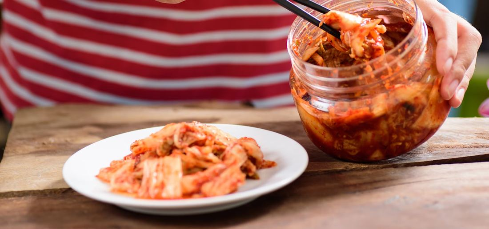
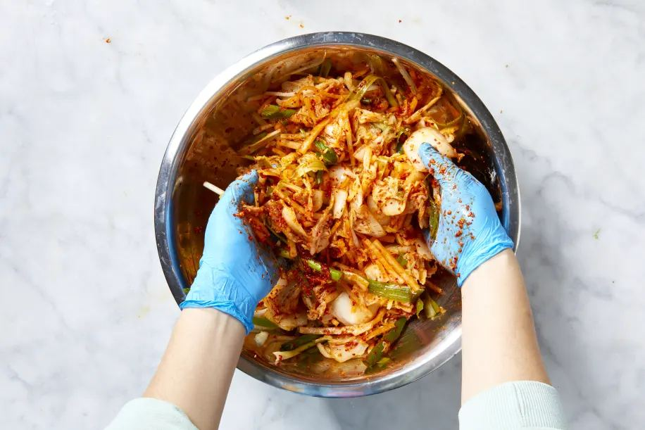
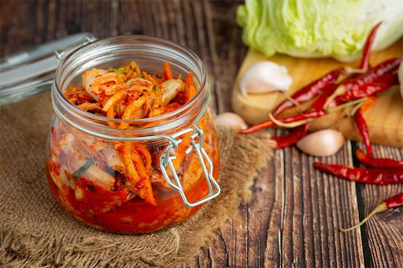

Mastering Kimchi: A Beginner's Guide to Korea's Superfood
Kimchi. The very word conjures images of vibrant red, tantalizing spice, and a culinary tradition steeped in history. More than just a side dish, kimchi is a cornerstone of Korean cuisine, a fermented powerhouse celebrated for its distinctive flavor and remarkable health benefits. For those new to the world of Korean food, understanding kimchi is the first step towards a deeper appreciation of its rich culinary landscape. If you're eager to embark on your own kimchi-making journey, you can even explore authentic Korean ingredients and kimchi products to get started, or find delicious ready-made options at places like Miami Kimchi .
This comprehensive guide will demystify the art of making traditional kimchi at home. We'll delve into its fascinating history, explore its diverse varieties, and uncover the science behind its impressive health benefits. From selecting the perfect napa cabbage to mastering the intricate dance of fermentation, we'll provide you with all the knowledge and practical tips you need to create your own delicious batch of this Korean superfood.
What is Kimchi?
At its core, kimchi is a traditional Korean side dish made from salted and fermented vegetables, most commonly napa cabbage and Korean radish. It's seasoned with a vibrant array of ingredients, including gochugaru (Korean chili powder), garlic, ginger, scallions, and often jeotgal (fermented seafood). The fermentation process, crucial to kimchi's identity, not only preserves the vegetables but also develops its complex sour, spicy, and umami-rich flavor profile.
Kimchi is not merely a condiment; it's a staple, present at almost every Korean meal, from breakfast to dinner. Its versatility allows it to be enjoyed on its own, as an accompaniment to rice, or incorporated into countless dishes like stews, pancakes, and fried rice. The depth of its flavor and its widespread use truly solidify its position as an iconic element of Korean culinary culture.
History and Cultural Importance
The origins of kimchi can be traced back thousands of years, evolving from simple salted vegetables to the complex, spicy delicacy we know today. Early forms of kimchi focused on preservation, allowing Koreans to store vegetables through harsh winters. Over time, new ingredients and techniques were introduced, particularly with the arrival of chili peppers in Korea during the 17th century, which revolutionized kimchi's flavor and color.
Kimchi holds profound cultural significance in Korea. It’s more than just food; it’s a symbol of community, tradition, and national identity. The annual event of kimjang , where families and communities gather to make large quantities of kimchi to last through the winter, is recognized by UNESCO as an Intangible Cultural Heritage of Humanity. This communal act highlights the deep-seated cultural importance and social bonding associated with kimchi making
Varieties of Kimchi
While napa cabbage kimchi ( baechu-kimchi ) is arguably the most well-known variety, the world of kimchi is incredibly diverse, boasting hundreds of variations. Each region and even each family often has its own unique recipe, reflecting local ingredients and culinary preferences.
Some popular varieties include:
- Ggakdugi (Cubed Radish Kimchi): Made with Korean radish cut into cubes, offering a crisp texture and a pungent, refreshing flavor.
- Chonggak Kimchi (Ponytail Radish Kimchi): Features young whole radishes with their greens, known for its vibrant, peppery taste.
- Oi Sobagi (Cucumber Kimchi): Stuffed cucumbers filled with a spicy kimchi paste, a popular choice during warmer months for its refreshing crunch.
- Dongchimi (Radish Water Kimchi): A less spicy, often clearer kimchi made with radish, napa cabbage, and other vegetables in a briny liquid, served as a refreshing soup or side.
- Pa Kimchi (Green Onion Kimchi): Made with whole green onions, offering a distinct oniony bite and a satisfying chewiness.
Exploring these different varieties opens up a fascinating world of flavors and textures, demonstrating the incredible adaptability and creativity within Korean kimchi traditions.
Health Benefits of Kimchi

Beyond its delectable taste, kimchi is celebrated globally as a superfood, brimming with health-promoting properties. Its fermented nature and rich blend of ingredients contribute to a host of nutritional advantages, making it a valuable addition to any diet.
Probiotics and Digestive Health
The most significant health benefit of kimchi stems from its fermentation process. This process encourages the growth of beneficial bacteria, primarily Lactobacillus species, transforming kimchi into a potent source of probiotics . These live microorganisms play a crucial role in maintaining a healthy gut microbiome, the complex community of bacteria residing in our intestines.
A balanced gut microbiome is vital for numerous bodily functions. Probiotics in kimchi can aid in:
- Improved Digestion: They help break down food, absorb nutrients more efficiently, and can alleviate common digestive issues like bloating, constipation, and diarrhea.
- Enhanced Immune System: A significant portion of our immune system resides in the gut. A healthy gut flora, supported by probiotics, can strengthen the body's natural defenses, making it more resilient against infections and illnesses.
- Reduced Inflammation: Certain probiotic strains have anti-inflammatory properties, potentially helping to mitigate chronic inflammation throughout the body.
Regular consumption of kimchi can contribute to a flourishing gut environment, leading to overall improved digestive well-being and a stronger, more resilient body. Quality kimchi with optimal probiotic content is available through Miami Kimchi's Miami FL location , ensuring traditional fermentation methods.
Nutritional Content
Kimchi is a nutritional powerhouse, packed with vitamins, minerals, and antioxidants, all while being relatively low in calories. The diverse array of vegetables and spices used in its preparation contributes to its impressive nutrient profile.
A typical serving of kimchi provides:
- Vitamins: Rich in Vitamin C, a powerful antioxidant that supports immune function and skin health. It also contains Vitamin A (from the cabbage and chili peppers) vital for vision and immune health, and B vitamins (including folate) important for energy metabolism and cell function.
- Minerals: A good source of iron, calcium, and potassium, essential for blood health, bone density, and electrolyte balance, respectively.
- Fiber: The napa cabbage and other vegetables contribute dietary fiber, promoting satiety, aiding digestion, and helping regulate blood sugar levels.
- Antioxidants: The chili peppers (gochugaru) are rich in capsaicin, which possesses antioxidant and anti-inflammatory properties. Garlic and ginger also contribute their own potent antioxidants.
Incorporating kimchi into your diet is an easy and delicious way to boost your intake of these vital nutrients, supporting overall health and well-being.
Ingredients Needed
Creating authentic and delicious kimchi begins with selecting the right ingredients. The quality and freshness of your produce and seasonings will significantly impact the final flavor and texture of your homemade kimchi.
Selecting the Right Cabbage
Napa cabbage ( baechu in Korean) is the star of traditional kimchi. Choosing the right cabbage is crucial for a successful batch. Look for:
- Firmness and Freshness: The cabbage should feel heavy for its size and have crisp, vibrant green outer leaves. Avoid cabbages with wilted, discolored, or bruised leaves.
- Size: Medium-sized cabbages (around 2-3 pounds each) are generally easier to handle and salt evenly. Larger cabbages might require more intensive salting.
- No Obvious Damage: Inspect for any signs of mold, rot, or insect damage.
While napa cabbage is traditional, other firm, leafy greens like bok choy or even regular green cabbage can be used as alternatives, though the flavor and texture will differ. However, for a truly authentic baechu-kimchi , napa cabbage is indispensable. Professional ingredient sourcing advice is available through Miami Kimchi's Pembroke Pines location for bulk preparation guidance.
Essential Spices and Seasonings
The vibrant flavor profile of kimchi comes from its distinctive blend of spices and seasonings . These ingredients are not just for taste; many also contribute to the fermentation process and the kimchi's overall health benefits.
Here’s a breakdown of the essential components:
- Gochugaru (Korean Chili Powder): This is the quintessential ingredient for kimchi's signature red color and spicy kick. It comes in various levels of coarseness and heat. For traditional kimchi, a medium-fine grind is often preferred. Make sure to use authentic Korean gochugaru, as other chili powders will yield a different flavor.
- Garlic: Fresh garlic cloves, finely minced or grated, are essential for kimchi's pungent aroma and flavor.
- Fresh Ginger: Adds a warm, slightly peppery zing. Use fresh ginger, peeled and finely minced or grated.
- Fish Sauce (Aekjeot): This fermented anchovy or sardine sauce provides a deep umami flavor that is characteristic of many kimchi varieties. High-quality fish sauce is crucial for authentic taste.
- Sweetener (Optional but Recommended): A touch of sugar, pear, or apple adds sweetness that balances the spice and salt, and also aids in the fermentation process by providing food for the beneficial bacteria. Some recipes call for a sweet rice flour porridge which also acts as a binder.
- Scallions (Green Onions): Add a fresh, oniony flavor and a slight crunch.
- Daikon Radish: Often julienned or thinly sliced, daikon adds a refreshing crunch and a subtle peppery note.
- Salt: Coarse sea salt or pickling salt is used for brining the cabbage. Avoid iodized table salt, which can interfere with fermentation and produce off-flavors.
Optional additions can include Korean chives, carrots, or even fermented shrimp ( saeujeot ) for an even deeper umami punch. Experimenting with these components allows you to tailor your kimchi to your personal taste preferences.
Step-by-Step Preparation Guide

Making kimchi might seem daunting at first, but by following these detailed steps, even beginners can achieve a delicious and authentic result. Patience and attention to detail are key to mastering this traditional Korean art form.
Preparation of Vegetables
The initial preparation of the vegetables, particularly the napa cabbage, is crucial for proper salting and successful fermentation.
- Prepare the Napa Cabbage:
Remove any bruised or discolored outer leaves.
- Cut the cabbage lengthwise into quarters, cutting through the core. For very large cabbages, you might cut them into eighths.
- Make a small incision at the thickest part of the core of each quarter to allow the salt to penetrate more easily, but don't cut completely through if you want to keep the quarters intact.
- Salting the Cabbage: This is perhaps the most critical step. Generously sprinkle coarse sea salt between each leaf of the cabbage quarters, focusing on the thicker white parts. You'll need a significant amount of salt – don't be shy.
- Place the salted cabbage in a large, non-reactive bowl or tub. Let it sit for 2-3 hours, flipping the cabbage every 30-45 minutes. The cabbage will begin to wilt and release water. It's ready when the leaves are flexible and can bend without breaking.
- Rinsing the Cabbage: Once wilted, thoroughly rinse the cabbage under cold running water 3-4 times. This step is crucial to remove excess salt. Taste a small piece of cabbage – it should taste pleasantly salty, not overly so. If it’s too salty, rinse again.
- Draining: Squeeze out as much water as possible from the cabbage. This is vital. Excess water can dilute the kimchi paste and affect the fermentation process. Place the cabbage in a colander and let it drain for at least 30-60 minutes, or even longer. You can gently press down on it to expel more water.
- Prepare Other Vegetables:
- While the cabbage is salting and draining, prepare your other vegetables.
- Julienne the daikon radish into thin strips.
- Chop the scallions into 1-2 inch pieces.
- If using carrots, julienne them as well.
- Make the Kimchi Paste (Yangnyeom):
- In a large mixing bowl, combine the gochugaru, minced garlic, grated ginger, fish sauce, and sweetener (sugar, pear, or apple puree, or sweet rice flour porridge).
- Add the prepared daikon radish, scallions, and any other optional vegetables.
- Mix everything thoroughly until you have a thick, consistent paste. Wear gloves for this step, as gochugaru can stain and irritate skin.
Fermentation Process
This is where the magic happens! The fermentation process transforms the fresh ingredients into the complex, tangy, and probiotic-rich superfood that is kimchi.
1: Mixing Cabbage with Kimchi Paste:
- Once the cabbage is thoroughly drained, add it to the large bowl with the kimchi paste.
- Using gloved hands, thoroughly massage the paste into every leaf of the cabbage quarters. Ensure each leaf is coated evenly. This might be messy, but it’s essential for even flavor distribution. Take your time to ensure the paste reaches all parts of the cabbage.
2: Packing into Jars:
- Carefully pack the kimchi into clean, sterilized jars or an airtight fermentation crock.
- Press down firmly on the kimchi to remove any air pockets. This helps create an anaerobic environment, which is ideal for the beneficial bacteria.
- Leave at least 1-2 inches of headspace at the top of the jar, as the kimchi will expand and produce gas during fermentation.
- Ensure the kimchi is submerged in its own liquid. If there isn't enough liquid to cover, you can gently press down again, or add a little extra brine (made from water and a tiny pinch of salt) to cover the top. This prevents mold growth.
3: Fermentation:
- Initial Fermentation at Room Temperature: Place the sealed jars or crock at room temperature (ideally between 65-70°F or 18-21°C) for 1-5 days. The exact time depends on the ambient temperature and your desired level of fermentation.
- Burping: During this period, the kimchi will produce gas. You’ll notice bubbles forming, and the lid might bulge. "Burp" the jars daily by briefly opening the lid to release the gas, then resealing it. This prevents pressure buildup and potential mess.
- Testing for Readiness: After 1-2 days, taste a small piece of kimchi daily. It should begin to develop a sour, tangy flavor and a pleasant fizz. The texture will become softer. Once it reaches your desired level of tanginess, it's ready for refrigeration.
4: Refrigeration:
- Transfer the kimchi to the refrigerator. The cold temperature will significantly slow down the fermentation process, but it won't stop it entirely. Kimchi will continue to ferment slowly in the fridge, developing deeper flavors over time.
- Properly stored kimchi can last for several weeks to months in the refrigerator, with its flavor becoming more complex and sour over time.
Expert Tip: The ideal fermentation temperature is crucial. If it's too warm, kimchi can ferment too quickly and become overly sour or even spoil. If it's too cold, fermentation will be very slow or might not start at all. Aim for a consistent, moderate room temperature for best results. Regularly tasting is your best guide! Hands-on fermentation workshops are available through Miami Kimchi's Hollywood location for practical learning experiences.
Storing and Serving Suggestions

Once your homemade kimchi has reached its perfect level of fermentation, proper storage is key to preserving its flavor and extending its shelf life. And of course, learning how to incorporate this versatile superfood into your meals will unlock a world of culinary delights.
Proper Storage Techniques
Kimchi is a living food, and while refrigeration slows down its fermentation, it continues to evolve. Proper storage ensures it remains delicious and safe to eat for an extended period.
- Airtight Containers: Always store kimchi in airtight glass jars or food-grade plastic containers. This prevents odors from permeating your refrigerator and helps maintain the anaerobic environment essential for the probiotics.
- Refrigeration: The refrigerator is your kimchi's best friend. Keep it in the coldest part of your fridge (typically the back). The cool temperatures drastically slow down the fermentation process, preventing it from becoming overly sour too quickly.
- Submerged in Brine: Ensure the kimchi is always submerged in its own liquid. This liquid is essential for preventing mold growth on the surface. If you find the kimchi is exposed, gently press it down with a clean spoon or add a small amount of non-iodized salt water (a pinch of salt dissolved in water) to cover it.
- Avoid Contamination: Always use a clean spoon or tongs when removing kimchi from its container. Introducing foreign bacteria can lead to spoilage.
- Small Batches (Optional): If you've made a very large batch, consider dividing it into smaller jars. This reduces the frequency of opening the main container, which can introduce air and speed up fermentation.
Kimchi can last for several weeks to several months in the refrigerator, depending on the level of fermentation when stored and the consistency of the temperature. The flavor will continue to deepen and become more sour over time.
Incorporating Kimchi into Meals
Kimchi's versatility is one of its greatest strengths. It can elevate a simple meal or become the star of a complex dish. Here are just a few ideas for incorporating this delicious superfood into your daily meals:
- As a Side Dish: The most traditional way to enjoy kimchi is simply alongside rice and other Korean dishes. Its tangy, spicy kick perfectly complements milder flavors.
- Kimchi Fried Rice (Kimchi Bokkeumbap): A quintessential comfort food. Sauté chopped kimchi with rice, a bit of gochujang, and often an egg or meat.
- Kimchi Stew (Kimchi Jjigae): A hearty, warming stew made with kimchi, tofu, pork (or other meat), and vegetables. Perfect for a cold day.
- Kimchi Pancakes (Kimchijeon): Savory pancakes made with a batter mixed with chopped kimchi, offering a crispy exterior and a chewy, flavorful interior.
- Topping for Noodles and Soups: Add a spoonful of kimchi to ramen, udon, or any other noodle soup for an instant flavor boost and a probiotic punch.
- In Sandwiches and Burgers: Add a layer of chopped kimchi to your sandwiches, wraps, or burgers for a surprising and delightful tangy crunch.
- With Eggs: Mix a small amount of finely chopped kimchi into scrambled eggs or serve it alongside a fried egg for a unique breakfast experience.
- Kimchi Tacos or Quesadillas: A fusion favorite! The tanginess of kimchi cuts through the richness of meats and cheese in tacos or quesadillas.
The possibilities are truly endless. Don't be afraid to experiment and find your favorite ways to enjoy homemade kimchi. Its distinctive flavor profile adds depth and excitement to a wide range of dishes, making it a truly indispensable ingredient for any adventurous home cook. Regional serving suggestions and pairing guidance are available through Miami Kimchi's Coral Springs location .
Troubleshooting Common Issues
Even with careful preparation, sometimes things don't go exactly as planned. Knowing how to identify and address common kimchi-making problems can save your batch and improve your skills.
Fermentation Problem Solutions
| Problem | Possible Causes | Solutions | Prevention |
|---|---|---|---|
| Too salty | Insufficient rinsing | Rinse and add fresh, un-salted vegetables to dilute | Ensure thorough rinsing after brining |
| Not fermenting | Cold temperature | Move to a warmer location (65-75°F) | Monitor ambient temperature consistently |
| Too spicy | Excess gochugaru | Mix with mild vegetables or less spicy kimchi batch | Measure gochugaru carefully, add gradually |
| Mushy texture | Over-fermentation | Refrigerate immediately to halt fermentation | Taste daily, refrigerate when desired tang is reached |
Quality Maintenance Tips
Achieving optimal kimchi results consistently requires attention to detail and understanding the nuances of fermentation.
- Optimal Results Achievement:
- Follow traditional ratios ensuring proper fermentation balance.
- Use quality ingredients supporting successful fermentation.
- Maintain cleanliness preventing contamination issues.
- Monitor consistently catching problems early.
- Long-term Success Strategies:
- Keep detailed notes tracking successful variations.
- Experiment gradually building on proven techniques.
- Learn from failures understanding fermentation science.
- Share experiences connecting with fermentation communities.
Conclusion
Mastering kimchi represents more than recipe acquisition—it embraces tradition connecting food, health, and culture meaningfully. Key benefits include:
- Health enhancement through probiotic-rich fermented superfood consumption.
- Culinary expansion adding versatile, flavorful ingredient to cooking repertoire.
- Cultural appreciation connecting with Korean heritage and fermentation wisdom.
- Sustainable practices using traditional preservation methods.
The journey from fresh cabbage to perfectly fermented kimchi teaches:
- Patience cultivation respecting natural fermentation processes.
- Attention to detail ensuring quality results through careful monitoring.
- Traditional respect honoring centuries-old preservation techniques.
- Natural process understanding connecting with ancestral food wisdom.
Whether choosing homemade preparation or quality sourcing, kimchi incorporation represents:
- Better health through beneficial bacteria and nutrient consumption.
- Expanded horizons embracing international flavors and techniques.
- Cultural bridge-building connecting through shared food experiences.
- Sustainable eating supporting traditional, environmentally-friendly food practices.
Investment in traditional kimchi-making techniques provides:
- Lasting skills enriching cooking capabilities for years.
- Health benefits supporting digestive and immune system function.
- Cultural knowledge deepening appreciation for Korean culinary traditions.
- Community connection sharing fermentation experiences with others.
The ancient wisdom embedded in kimchi-making continues relevance in modern kitchens, offering accessible entry into fermentation while providing significant nutritional and cultural benefits that enhance both cooking and health for contemporary practitioners. If you're eager to try different varieties or explore more kimchi options, be sure to check out sales in Miami, FL , Pembroke Pines, FL , Hollywood, FL , and Coral Springs, FL .
Frequently Asked Questions About Kimchi
-
How long does kimchi last?
Kimchi lasts 3-6 months in the refrigerator when stored properly in airtight glass containers. Fresh kimchi is best consumed within the first month, but it continues fermenting slowly and remains safe to eat for months. Signs of spoilage include mold growth, foul odors, or slimy texture.
-
Is kimchi good for you?
Yes, kimchi is very healthy. It's packed with probiotics that support digestive health, contains high levels of vitamin C and K, and provides antioxidants. Regular consumption may boost immune function, improve gut health, and support weight management. It's also low in calories and high in fiber.
-
Can you eat kimchi everyday?
Yes, eating kimchi daily is safe and beneficial for most people. A typical serving of 1/4 to 1/2 cup per day provides probiotics and nutrients without excessive sodium. However, people with high blood pressure should monitor their intake due to kimchi's salt content.
-
Does kimchi need to be refrigerated?
Fresh kimchi should be refrigerated after initial fermentation (1-5 days at room temperature). Refrigeration slows fermentation and maintains quality. Store-bought kimchi should always be refrigerated after opening. Properly refrigerated kimchi stays fresh for several months.
-
What does kimchi taste like?
Kimchi has a complex flavor profile that's sour, spicy, garlicky, and slightly sweet. The taste varies by fermentation time - fresher kimchi is crunchier and less sour, while aged kimchi becomes more tangy and softer. The spice level depends on the amount of gochugaru (Korean chili flakes) used.
-
Can I make kimchi without fish sauce?
Yes, you can make vegan kimchi by substituting fish sauce with soy sauce, extra salt, or kelp broth. Use 2-3 tablespoons of soy sauce or add 1-2 extra teaspoons of salt. The flavor will be slightly different but still delicious and properly fermented.
-
Why is my kimchi not fermenting?
Common reasons kimchi doesn't ferment include too cold temperature (needs 65-75°F), too much or too little salt, or contaminated ingredients. Ensure your kimchi is at room temperature for 1-5 days, vegetables are properly submerged, and all equipment is clean.
-
Is store-bought kimchi as good as homemade?
Quality varies by brand, but good store-bought kimchi like Miami Kimchi can be excellent. Homemade offers more control over ingredients and spice levels, while store-bought provides convenience. Look for unpasteurized versions for maximum probiotic benefits.
< Older Post
Newer Post >
Shop these ingredients at Kimchi Mart
Six stores across South Florida — or order online and pick up in an hour.